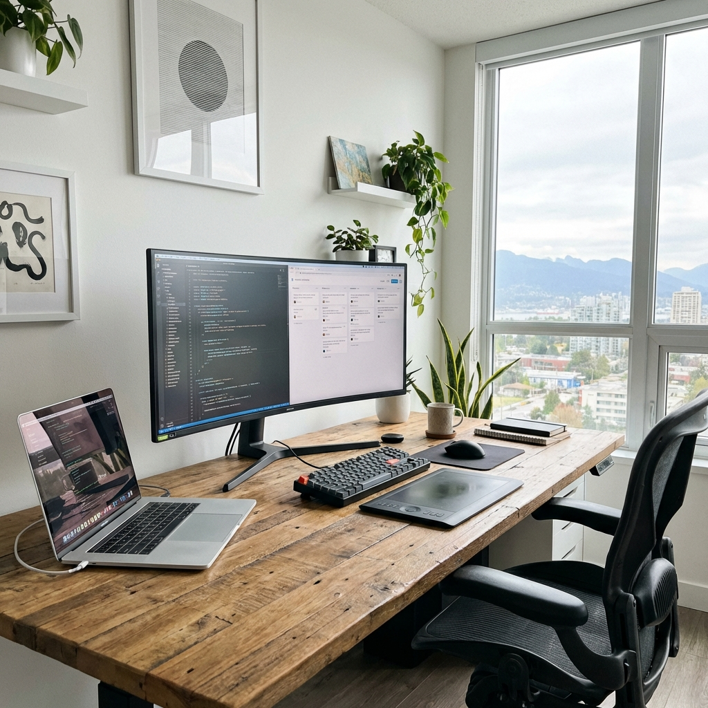
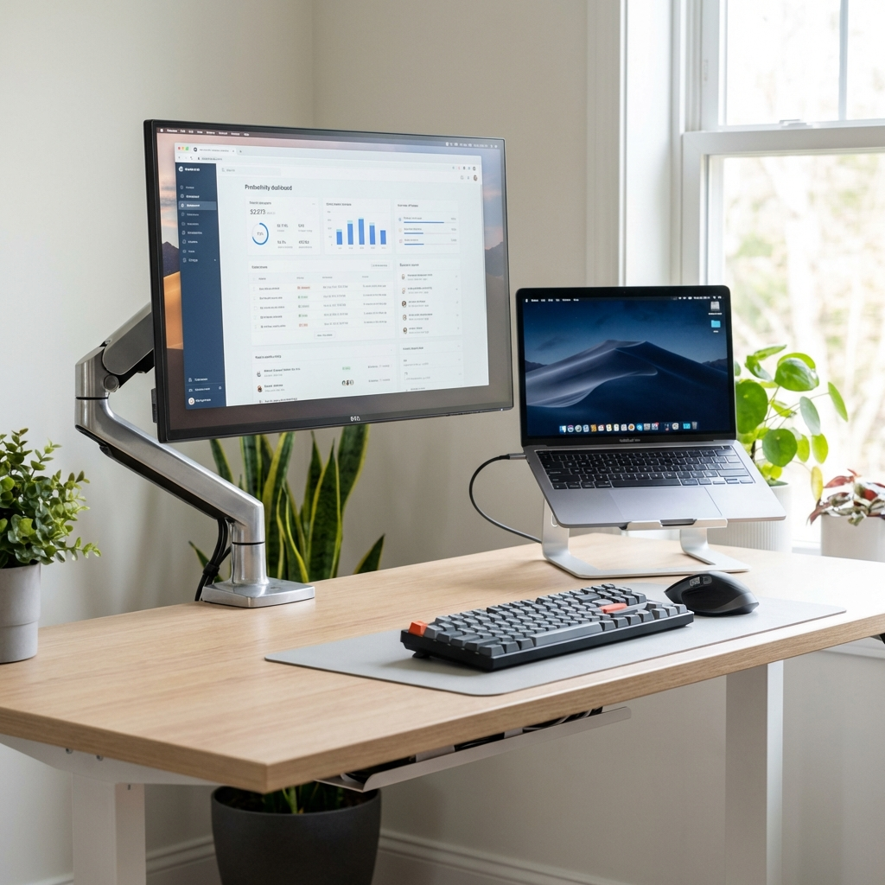
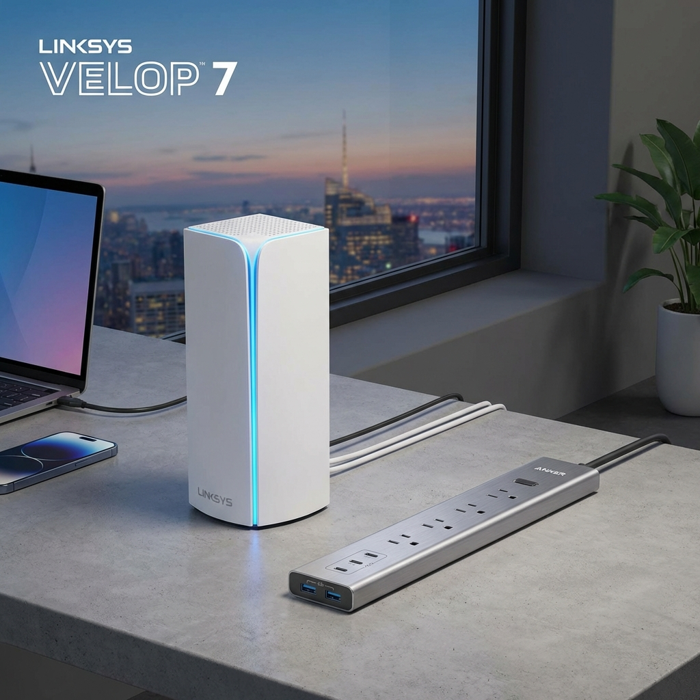
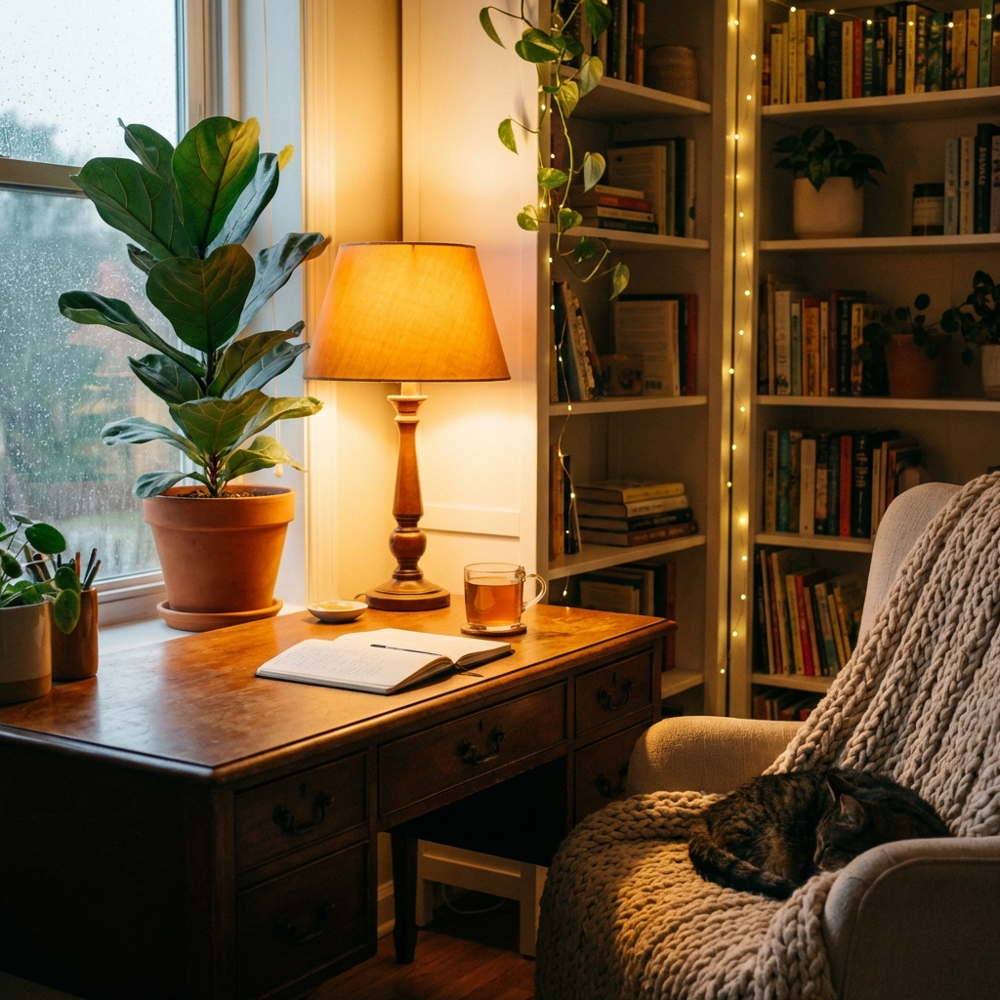
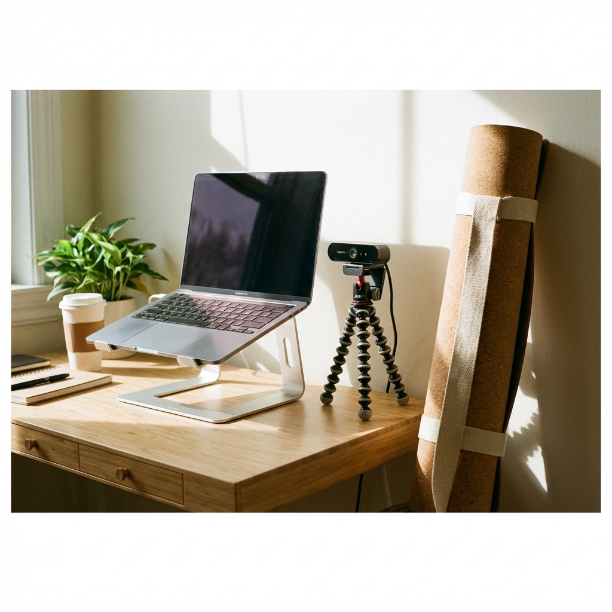

Hi Dailos! Preparing an apartment for digital nomads is about more than just Wi-Fi. It's about creating a space where productivity meets comfort. For a nomad, the workspace isn't a luxury—it's a necessity. This guide covers the essentials to make your Airbnb a top choice for remote workers.
The Core Philosophy
"For people sitting or standing in the same position for sometimes 12 hours per day, the workplace setup
is extremely important. Uncomfortable positions mean back pain, neck pain, and lost focus."
The Essentials Checklist

🖥️ The Desk
The foundation of the office. It must be solid and spacious.
- Depth: At least 60cm deep (crucial for eye distance).
- Width: Minimum 120cm to fit laptop + notes + coffee.
- Stability: Must not wobble while typing.
- Bonus: IKEA hack standing desk or adjustable standing desk (Huge plus!).



📡 Connectivity & Power
The lifeblood of a digital nomad.
- Internet: High-speed Fiber (100Mbps+ up/down).
- Backup: Mention if there's good 4G/5G signal.
- Power: Extension cord with multiple sockets on the desk.
- Adapters: A couple of universal travel adapters.

💡 Environment
Focus requires a distraction-free zone.
- Lighting: Desk lamp (warm/cool adjustable is nice).
- Climate: Fan or AC for hot days.
- Coffee: A decent coffee machine (Nespresso or Moka pot).

✨ The "Super Host" Extras
Items that will get you 5-star reviews instantly.
- Laptop Stand (to raise laptop screen to eye level).
- External Keyboard & Mouse.
- Webcam & Tripod (for professional calls).
- Yoga Mat (for stretching after work).
Visual Inspiration
A good setup encourages correct posture. Click any image to enlarge.


×